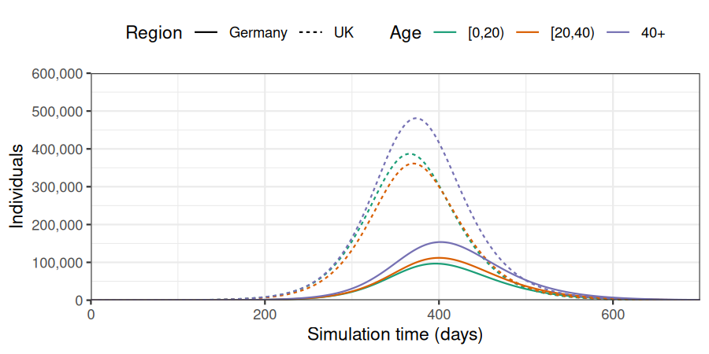
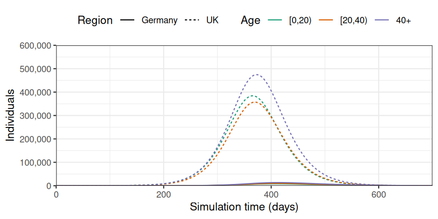
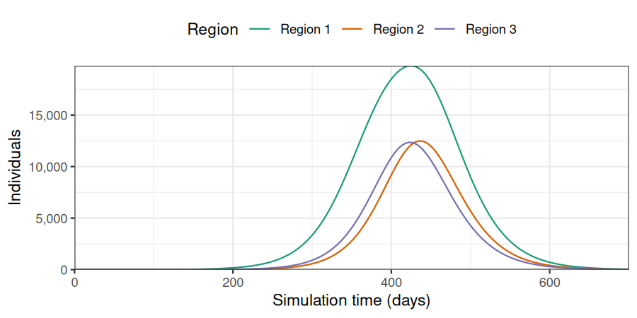

Modelling in multiple populations
Source:vignettes/modelling_populations.Rmd
modelling_populations.RmdNew to epidemics? It may help to read the “Get started” vignette first!
This vignette shows how epidemics can be used to combine multiple age-stratified populations into an epidemic model.
Code
Combining two populations
We prepare two age-stratified populations: one using the contact data and demography from the UK, and the other using the contact data and demography from Germany. The epidemiological compartments match the default epidemic model (SEIR-V).
We assume that one in every million people has been infected and is infectious in the United Kingdom, while all the population in Germany is susceptible.
The code for these steps is similar to that in the “Getting started vignette”.
First, we define the contact data, demography, and set initial conditions for the first population, and create the corresponding population object.
Code
# load contact and population data from socialmixr::polymod
polymod <- socialmixr::polymod
contact_data1 <- socialmixr::contact_matrix(
polymod,
countries = "United Kingdom",
age.limits = c(0, 20, 40),
symmetric = TRUE
)
#> Removing participants that have contacts without age information. To change this behaviour, set the 'missing.contact.age' option
# prepare contact matrix
contact_matrix1 <- t(contact_data1$matrix)
# prepare the demography vector
demography_vector1 <- contact_data1$demography$population
names(demography_vector1) <- rownames(contact_matrix1)
# view contact matrix and demography
contact_matrix1
#> age.group
#> contact.age.group [0,20) [20,40) 40+
#> [0,20) 7.883663 2.794154 1.565665
#> [20,40) 3.120220 4.854839 2.624868
#> 40+ 3.063895 4.599893 5.005571
demography_vector1
#> [0,20) [20,40) 40+
#> 14799290 16526302 28961159Code
# initial conditions
initial_i <- 1e-6
initial_condition1 <- c(
S = 1 - initial_i, E = 0, I = initial_i, R = 0, V = 0
)
# build for all age groups
initial_conditions1 <- rbind(
initial_condition1,
initial_condition1,
initial_condition1
)
# assign rownames for clarity
rownames(initial_conditions1) <- rownames(contact_matrix1)Code
population1 <- population(
name = "UK",
contact_matrix = contact_matrix1,
demography_vector = demography_vector1,
initial_conditions = initial_conditions1
)Then, we define the contact data, demography, and initial conditions for the second population, and create the corresponding population object.
Code
contact_data2 <- socialmixr::contact_matrix(
polymod,
countries = "Germany",
age.limits = c(0, 20, 40),
symmetric = TRUE
)
#> Removing participants without age information. To change this behaviour, set the 'missing.participant.age' option
#> Removing participants that have contacts without age information. To change this behaviour, set the 'missing.contact.age' option
contact_matrix2 <- t(contact_data2$matrix)
demography_vector2 <- contact_data2$demography$population
names(demography_vector2) <- rownames(contact_matrix2)
# build for all age groups
initial_condition2 <- c(
S = 1, E = 0, I = 0, R = 0, V = 0
)
initial_conditions2 <- rbind(
initial_condition2,
initial_condition2,
initial_condition2
)
population2 <- population(
name = "Germany",
contact_matrix = contact_matrix2,
demography_vector = demography_vector2,
initial_conditions = initial_conditions2
)We define prop_matrix, the connectivity matrix between the two populations (United Kingdom and Germany). In this first example, the rate of connections between the population is 5% that of the rate of connection in each population.
Code
We then use the function combine_populations to combine the two populations. The resulting population object will contain 6 strata (3 age groups in each population). If the method is defined as "linear", the contact rate between groups is computed as the product between the contact matrix between groups and the connectivity between populations.
Note on connectivity matrix
The contact matrix element of the combined population contains the number of connections between each group of all the populations listed in the populations argument. More than two populations can be combined, and the populations should all contain the same demographic groups. The number of contacts between groups from the same populations is computed from the contact_matrix. The number of contacts between groups from different populations is computed from the connectivity_matrix argument. Different methods can be used to compute the number of contacts between groups from different populations. If method is linear, the number of contacts between groups of different population is computed as the product of the connectivity between the two populations (in connectivity_matrix) and the number of contacts between groups in the population of origin.
Code
# Combine populations
tot_population <- combine_populations(
populations = list(population1, population2),
connectivity_matrix = prop_matrix,
method = "linear",
name = "combine"
)
tot_population$contact_matrix
#> UK_[0,20) UK_[20,40) UK_40+ Germany_[0,20) Germany_[20,40)
#> UK_[0,20) 7.8836634 2.7941543 1.56566491 0.21987654 0.0745734
#> UK_[20,40) 3.1202198 4.8548387 2.62486789 0.09659556 0.2112342
#> UK_40+ 3.0638950 4.5998927 5.00557103 0.12694135 0.1652582
#> Germany_[0,20) 0.3941832 0.1397077 0.07828325 4.39753086 1.4914680
#> Germany_[20,40) 0.1560110 0.2427419 0.13124339 1.93191115 4.2246835
#> Germany_40+ 0.1531947 0.2299946 0.25027855 2.53882710 3.3051642
#> Germany_40+
#> UK_[0,20) 0.04774997
#> UK_[20,40) 0.08052045
#> UK_40+ 0.20370036
#> Germany_[0,20) 0.95499934
#> Germany_[20,40) 1.61040905
#> Germany_40+ 4.07400722The object tot_population contains 6 groups: UK population aged 0-20 years old, 20-40 year old, and >40 years old; and German population aged 0-20 years old, 20-40 year old, and >40 years old.
We now use model_default to simulate the epidemic on the combined population for 700 days, with transmission starting in the United Kingdom.
Code
# run an epidemic model using `epidemic`
output <- model_default(
population = tot_population,
time_end = 700, increment = 1.0
)We plot the data to observe the number of cases per region and age group. In all age groups, the outbreaks starts and peaks later in Germany than in the United Kingdom.
Code
# plot figure of epidemic curve
filter(output, compartment == "infectious") %>%
mutate(region = gsub("[_].*", "", demography_group),
age = gsub(".*[_]", "", demography_group)) %>%
ggplot(
aes(
x = time,
y = value,
col = age,
linetype = region
)
) +
geom_line() +
scale_y_continuous(
labels = scales::comma
) +
scale_colour_brewer(
palette = "Dark2",
name = "Age"
) +
expand_limits(
y = c(0, 600e3)
) +
coord_cartesian(
expand = FALSE
) +
theme_bw() +
theme(
legend.position = "top"
) +
labs(
x = "Simulation time (days)",
linetype = "Region",
y = "Individuals"
)
Combining two populations using a gravity model
When combining populations, the argument method can be set to “gravity” to implement a gravity model instead, using the connectivity matrix as a distance between regions. In this example, the populations are set to 200km away. The connectivity between regions is then computed from the overall number of inhabitants in each region and the distance.
Note on gravity connectivity matrix
If method is set to gravity, a gravity model is used to estimate the number of connections between populations. For each population \(i\) and \(j\), the number of connections is computed as \(C_{ij} = \frac{N_i * N_j}{d_{ij}}\), with \(N_i\) and \(N_j\) the overall number of inhabitants in each population, and \(d_{ij}\) the distance between populations, taken from the connectivity_matrix argument. To avoid large values, \(C_{ij}\) is divided by the maximum value of \(C\). The number of contacts between groups from different populations is computed as the product of \(\frac{C_ij}{max(C)}\) and the number of contacts between groups in the population of origin.
Code
distance_matrix <- matrix(c(0, 200, 200, 0), nrow = 2, ncol = 2)
gravity_population <- combine_populations(
populations = list(population1, population2),
connectivity_matrix = distance_matrix,
method = "gravity", name = "combine_gravity"
)
gravity_population$contact_matrix
#> UK_[0,20) UK_[20,40) UK_40+ Germany_[0,20)
#> UK_[0,20) 7.88366337 2.79415430 1.565664914 0.016230489
#> UK_[20,40) 3.12021981 4.85483871 2.624867887 0.007130334
#> UK_40+ 3.06389499 4.59989272 5.005571031 0.009370351
#> Germany_[0,20) 0.02909717 0.01031272 0.005778585 4.397530864
#> Germany_[20,40) 0.01151617 0.01791833 0.009687912 1.931911151
#> Germany_40+ 0.01130828 0.01697737 0.018474655 2.538827098
#> Germany_[20,40) Germany_40+
#> UK_[0,20) 0.005504738 0.003524729
#> UK_[20,40) 0.015592541 0.005943728
#> UK_40+ 0.012198762 0.015036422
#> Germany_[0,20) 1.491467979 0.954999336
#> Germany_[20,40) 4.224683544 1.610409054
#> Germany_40+ 3.305164225 4.074007220Code
# run an epidemic model
output_gravity <- model_default(
population = gravity_population,
time_end = 700, increment = 1.0
)Given the distance between populations, the rate of connectivity between the two populations is much lower than when we used method = "linear". Therefore, almost all cases are reported in the United Kingdom, with rare transmission to Germany.
Code
# plot figure of epidemic curve
filter(output_gravity, compartment == "infectious") %>%
mutate(region = gsub("[_].*", "", demography_group),
age = gsub(".*[_]", "", demography_group)) %>%
ggplot(
aes(
x = time,
y = value,
col = age,
linetype = region
)
) +
geom_line() +
scale_y_continuous(
labels = scales::comma
) +
scale_colour_brewer(
palette = "Dark2",
name = "Age"
) +
expand_limits(
y = c(0, 600e3)
) +
coord_cartesian(
expand = FALSE
) +
theme_bw() +
theme(
legend.position = "top"
) +
labs(
x = "Simulation time (days)",
linetype = "Region",
y = "Individuals"
)
The argument method can also be defined as a function, which will be used to compute the connectivity matrix. Using method = gravity_contact will lead to the same output as method = "gravity".
Code
gravity_pop_with_function <- combine_populations(
populations = list(population1, population2),
connectivity_matrix = distance_matrix,
method = gravity_contact, name = "combine_gravity"
)
# run an epidemic model
output_gravity_with_function <- model_default(
population = gravity_pop_with_function,
time_end = 700, increment = 1.0
)
# Check function and "gravity" outputs are the same
all(output_gravity_with_function == output_gravity)
#> [1] TRUECombining n populations using a gravity model
In this last example, the function combine_population is used to combine more than 2 population objects. First we define a set of population objects, with 0 infected and infectious cases at the start of the simulations.
Code
n <- 4
all_population <- list()
for (i in seq_len(n - 1)){
all_population[i] <- list(population(
contact_matrix = contact_matrix1,
demography_vector = demography_vector1 / 100,
initial_conditions = rbind(
c(S = 1, E = 0, I = 0, R = 0, V = 0),
c(S = 1, E = 0, I = 0, R = 0, V = 0),
c(S = 1, E = 0, I = 0, R = 0, V = 0)
),
name = paste0("Region ", i)))
}We then add one last population object to the all_population list, with a few infectious individuals.
Code
all_population[n] <- list(population(
contact_matrix = contact_matrix1,
demography_vector = demography_vector1 / 100,
initial_conditions = rbind(
c(S = 1 - 1e-6, E = 0, I = 1e-6, R = 0, V = 0),
c(S = 1 - 1e-6, E = 0, I = 1e-6, R = 0, V = 0),
c(S = 1 - 1e-6, E = 0, I = 1e-6, R = 0, V = 0)
),
name = paste0("Region ", n)))Each population is placed on a line, with consecutive populations being 150km away (i.e. populations 1 and 2 are 150km away, 1 and 3 are 300km away…).
Code
We combine all populations using a gravity model, and simulate an epidemic using and SEIRV model.
Code
combined_n_populations <-
combine_populations(
populations = all_population,
connectivity_matrix = distance_matrix_n,
method = "gravity", name = "combine_gravity_n"
)
# run an epidemic model
output_gravity_n <- model_default(
population = combined_n_populations,
time_end = 700, increment = 1.0
)The outbreak first peaks in region 4, then in region 3, 2, and 1, with similar number of cases.
Code
filter(output_gravity_n, compartment == "infectious") %>%
mutate(region = gsub("[_].*", "", demography_group),
age = gsub(".*[_]", "", demography_group)) %>%
group_by(time, region) %>%
summarise(value = sum(value)) %>%
ggplot(
aes(
x = time,
y = value,
col = region
)
) +
geom_line() +
scale_y_continuous(
labels = scales::comma
) +
scale_colour_brewer(
palette = "Dark2",
name = "Region"
) +
expand_limits(
y = c(0, 15e3)
) +
coord_cartesian(
expand = FALSE
) +
theme_bw() +
theme(
legend.position = "top"
) +
labs(
x = "Simulation time (days)",
linetype = "Region",
y = "Individuals"
)
#> `summarise()` has grouped output by 'time'. You can override using the
#> `.groups` argument.